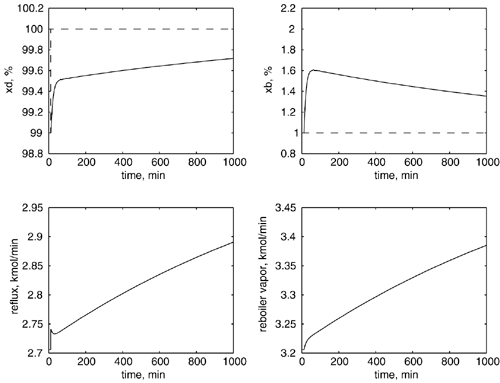
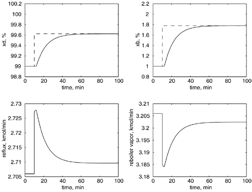
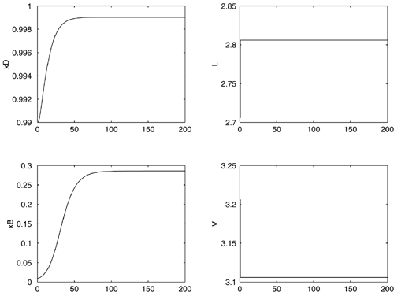

| [ Team LiB ] |
|
M13.5 Multiple SISO ControllersSetpoint ChangesIn Section M13.3, the composition control loops were tuned independently using the IMC-based PI technique, neglecting time delays. The control system was simulated assuming a 2-minute time delay on all measurements. The IMC filter factors (l1, l2) were both set to 25 minutes, one third of the process time constant. Here, we show the responses for both loops closed simultaneously. The response for a setpoint change of 1 mol% (0.01 mole fraction) in the distillate composition is shown in Figure M13-6. Note that the controllers are highly interacting and the response time is extremely slow (the outputs are still far from the setpoint after 1000 minutes). Figure M13-6. Setpoint change of r = [1,0], mol% light comp. Note the long timescale. It is intriguing that simultaneous setpoint changes of 0.625 mol% in the distillate and 0.78 mol% in bottoms composition lead to much more rapid closed-loop responses, as shown in Figure M13-7. Notice here that the time scale is 100 minutes, and that the desired setpoint has been achieved in 55 minutes. Figure M13-7. Setpoint change of r = [0.625,0.78], mol% light comp. Note the relatively short timescale compared to Figure M13-6. Without any other information, one might assume that nonlinearities could be used to explain the difference in the system behavior displayed in Figures M13-6 and M13-7. These simulations, however, are based on the linear transfer function model. The differences observed are due to the "directional sensitivity" of multivariable systems. Singular value analysis will be used in Section M13.6 to better understand this behavior. The reader should tune the controllers for tighter performance for the setpoint change in the "slow" direction (Figure M13-8). Decrease l1 and l2 (increase the magnitude of the proportional gains) and observe the behavior (Additional Exercise 3). Also, once tighter control has been achieved with both loops closed, consider the effect of opening one loop. You should observe that the other loop goes unstable (Additional Exercise 4). Figure M13-8. Responses to an increase in reflux (2.706–2.806) and decrease in vapor (3.206–3.106) rates. Disturbance RejectionThe focus of the previous sections has been on setpoint changes. It is also very important for any control strategy to reject feed flowrate and feed composition disturbances. In Additional Exercise 9 you have the opportunity to perform simulations and discuss results for disturbance rejection. |
| [ Team LiB ] |
|